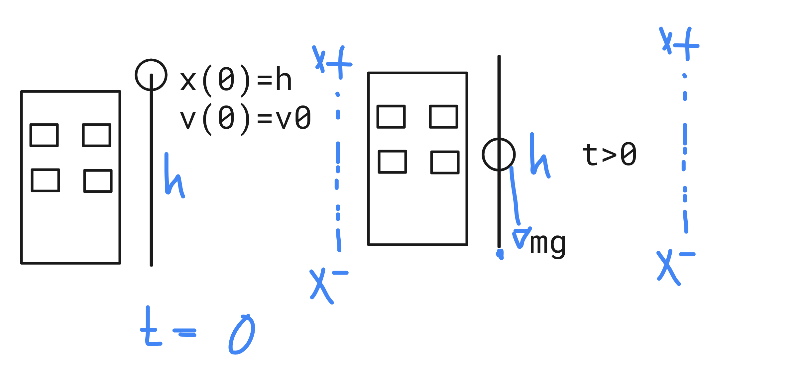

x2=x, what will we result in this equation? A set of numbers.
y′=y, what will we solve in this equation? A set of functions.
What are differential equations?
A differential equation is an equationthat involves one or more derivatives of an unknown function, which one will have to find because it satisfies the differential equation on some open interval.
What are ordinary differential equations (ODE)?
When your equation involves a function with respect to only one variable x in the Domain, i.e. y=f(x). Thus,
F(x,y,y′,y′′,...,y(n))=0
👁️🗨️
y=f(x) must be in the problem conditions.
N-th order equation and his grade
The order equation is the order of his highest derivative.
Grade equation is the algebraic grade of the grade of his highest derivatives.
Applications.
Newton's Law of Cooling
dtdT=k(T−Ta)
Newton's Second Law of Motion
mdt2d2=−kx
What are partial differential equations (PDE)?
When your equation involves a function for a space x.
Applications.
Laplace's equation
∂x2∂2u+∂y2∂2u=0, with u=u(x,y)
Heat equation
∂t∂u−α[∂x2∂2u−∂y2∂2u]=0 with u=u(t,x,y)
Graphical and Numerical Methods
Graphical methods or direction fields
The direction field gives a picture of the first-order equation and its integral curves give a picture of the solutions.
Sketch y′=f(x,y) with representative set of points in the plane (x,y).
Methods
The simplest of all differential equations is
dxdy=f(x)
and we solve it by
y(x)=∫f(x)dx+c
Cauchy problems or initial value problem
Sometimes we are interested in a particular solution given an initial condition, that is, our solution only satisfies this condition.
Existence and Uniqueness Theorem or Picard–Lindelöf theorem.
If f(x,y) and yf(x,y) are continuous functions on a closed rectangle R,
then by each point (x0,y0) in the interior of R there passes a unique integral curve of the equation dxdy=f(x,y)
Application.
Problem:y′=cos(x),y(0)=0Particular solution: y(x)=sin(x)Is this particular solution unique?As f(x,y)=cos(x) and dydf(x,y)=dydcos(x)=0 are continuous in all of the rectangles R, by uniqueness theorem, y(x)=sin(x) is unique.
Radiocarbon dating, developed by the American chemist Willard Libby in 1949 and for which he won the Nobel Prize in Chemistry in 1960, is a method that uses the carbon-14 isotope to estimate the age of organic materials up to around 50,000 years. The method is based on the fact that the decay rate of carbon-14 is directly proportional to the number of atoms that the material to be evaluated has over time t. Added to this, the half-life (or half-life) of this isotope is known to be approximately 5,730 years. Therefore, we can use differential equations to model such radioactive decay and thus estimate the age of a certain material. According to A. J. Timothy Jull and other authors, in their research paper Radiocarbon Dating of the Scrolls and Linen Fragments from the Judean Desert, '' in March 1994, radiocarbon dating was used to determining the age of the Book of the Prophet Isaiah. The researchers took a sample of the manuscript and determined that it contained approximately 75% the initial amount of carbon-14. By GalileoX CMath002X Introducción a las ecuaciones diferenciales.
a) Determine the amount of carbon-14 present in the manuscript sample as a function of time. Assume k that it is the constant of proportionality of the model and that N0 it is the initial amount of carbon-14.
N′∝NN′−kN=0,k<0 Since this is a decreasing problemN(0)=N0N(t)=N0e−P(t),P(t)=∫−kdtN(t)=N0e−kt
Determine the constant of proportionality k of the previous model.
0.75N0=N0ekt∗t∗=kln(0.75)=2378.161994−2378=−384→384 AC
An industrial process requires raising the temperature of a certain material to 100°C. After the molding process has been carried out, the part is placed in a room with a controlled temperature of 20°C. An operator determines that after 20 minutes the temperature of the part is 40°C. For the piece to be considered ready to go to the next production phase, it must reach the 25°C.
Determine the time (in minutes) required for the part to be ready to go to the next phase.
dtdT=k(T−20)T(0)=100T(20)=40T(t∗)=25∫T−201dT=k∫dtln∣T−20∣=kt+CT−20=CektT(t)=Cekt+20T(0)=C+20=100,C=80T(20)=80ek20+20=40,k=ln(41)/20=−0.06931471805T(t)=80ekt+20T(t∗)=80ekt∗+20=2580ekt∗=5ekt∗=161kt∗=ln(161)t∗=20ln(41)ln(161)=40 min
Suppose that velocity of a sphere decreases directly proportional to its surface area. The sphere starts with radius 1. After one minute, the measured radius is half the initial radius.
Calculate time (in minutes) to disintegrate completely.
dtdV∝A(r)dtdV=kA(r)drdVdtdr=kA(r)(4πr2)dtdr=k(4πr2)dtdr=k∫dr=∫kdtr(t)=kt+CBut r(0)=k×0+C=1,C=1r(1)=k×1+1=21,k=−1/2Therefore, r(t∗)=−21t∗+1=0, when t∗=2 min
First-order equations
Linear equations
Linear equation: y′+f1(x)y=f2(x),f1 and f2 are continuous.Solution A: y(x)=μ1∫μf2dx,μ(x)=e∫f1dx,μ(0)=1
I guess it yn(x)is the general solution from an homogeneous equation associated and yp(x) is a particular solution from lineal linear equation. So,
yn′=f1yn and yp′=f1yp+f2
yn′+yp′=f1yn+f1yp+f2
Since dxd[f1(x)+f2(x)]=dxdf1+dxdf2,
(yn+yp)′=f1(yn+yp)+f2
As y=yn+yp
y′=f1y+f2
Solution for Homogeneous equation associated
As yh′=f1yh
yhyh′=f1(x)→ln∣y∣=ln∣c∣=∫f1(x)dx
yh(x)=ce∫f1(x)dx
Solution algorithm for particular solution yp by Lagrange method
y(x)=z(x)yh(x)
z(x)=∫yh(x)f2(x)dx
Proof
y=zyhy′=z′yh+zyh′Substitute in y′=f1y+f2z′yh+zyh′=f1(zyyh)+f2But yh′=f1yhz′yh+zf1yh=f1zyh+f2z′yh=f2z′=yhf2z(x)=∫yh(x)f2(x)dx
If y′+f1(x)y=f2(x),
then y(x)=ce∫f1(x)dx(∫ce∫f1(x)dxf2(x)dx)
Solution algorithm for particular solution yp by Method of undetermined coefficients
Mediante la EDO S′(t)=rS(t)+k(t) puede modelarse el valor de una inversión S respecto al tiempo t donde r es la tasa de interés y k(t) es un monto de dinero que se deposita al tiempo t. Resuelve el PVI definido por la EDO, la condición inicial S(0)=0, una tasa de interés r=0.06 y k(t)=1000ert.
Un tanque tiene 20 kg de sal disueltos en 100 l de agua. Al tanque entra una mezcla de agua con sal a una tasa de 12 l/min con una concentración de 3/1000 kg/l de sal. Además, el contenido del tanque sale a una rapidez de 10 l/min. ¿Cuánta sal habrá en el tanque a los 150 min?
Un objeto de masa m se lanza verticalmente hacia abajo con una velocidad inicial v0 desde una altura h. Aplique la Segunda Ley de Newton para determinar una expresión que describa la velocidad v y posición del objeto como una función del tiempo t. Determine la ecuación que describe la velocidad del objeto en cualquier instante de tiempo t, tomando en cuenta que x(0)=h. Encuentre el tiempo que tarda el objeto en llegar al suelo si v0=0m/s y h=5 m.
Por la segunda ley de Netwon:
∑F=ma
Para nuestro caso de estudio:
m(−g)=ma
Donde g=9.8m/s2 y por definicion a=dtdV
Asi,
dtdV=−g∫dtdVdt=∫(−g)dtV(t)=−gt+C
Pero, V(0)=V0=C
Asi,
V(t)=−gt+V0
Por definicion de velocidad
V(t)=dtdx∫dtdxdt=−gt+V0x(t)=−2gt2+V0t+C
Sin embargo, x(0)=h=C, obteniendo
x(t)=−2gt2+V0t+h
Para la situacion particular v0=0m/s y h=5 m, sustituimos en la ecuacion
x(t)=−4.905t2+5
El suelo significa x(t1)=0, donde t1>0 es el tiempo buscado:
−4.905t12+5=0t1=(9.81)4⋅4.905⋅5 st1=1.00963755469 s
Determine la ecuación de la curva C, en el plano, cuya recta tangente T en cualquier punto P(x,y) verifica la propiedad que la suma de sus interceptos con los ejes coordenados es una constant k. La curva pasa por el punto (1,1).
La intersección con el eje de las abscisas de la recta tangente a una curva en un punto cualquiera es siempre igual a la ordenada de dicho punto. Si una miembro de la familia pasa por el punto , determinar la ecuación de dicha curva.
Let y2 and y1 solutions then the general solution is
y(x)=c1y1(x)+c2y2(x)
Uniqueness Theorem.
If y′′+Py′+Qy=F(x),y(a)=b,y′(a)=cP,Q,F continuous on I then y(x) is unique.
Lineal dependency
Linear independency: c1,c2=0,I⊂R,c1y1+c2y2=0
∀x∈I,W(y1,y2)(x)=y1y2′−y1′y2=0⟹y1,y2 are linear independents
Worked examples
Let ty′′−t6y=0, assert y1(t)=t3 it is a solution, and then search u(t) such that y2(t)=u(t)y1(t).
t(6t)−t6(t3)=0⟹y1=t3 It is a solution.We have yc=c1y1+c2y2y2′=u′y1+uy1′y2′′=u′′y1+u′y1′+u′y1′+uy1′′Substitute in ODE with c1=0,c2=1(u′′y1+2u′y1′+uy1′′)−t26(uy1)=0(t3)u′′+2u′(3t2)+(u6t)−t26(ut3)=0(t3)u′′+(6t2)u′=0u′′+t6u′=0Let v=u′⟹v′=u′′∫vv′dt=∫−t6dtv(t)=t6cdtdu=t6cu(t)=−t5c1+c2Thus y2=(t5−c1+c2)(t3)y2=t2−c1+c2t3yc=c1t3+c2t21Prove:(t46t5+6)−t26(t3+t21)=0W(y1,y2)=−5
Euler-Cauchy equation:t2y′′(t)−6y(t)=t4. Use z=ln(t),t=ez
Let y(t)=u(z(t)) an ODE solutionChain rule:y′(t)=u′(z(t))z′(t)y′′(t)=u′′(z(t))z′(t)z′(t)+u′(z(t))z′′(t)y′′(t)=u′′(z(t))t21+u′(z(t))(t2−1)=t21(u′′(z(t))−u′(z(t)))Substitute t=ezu′′(z(t))−u′(z(t))−6u(z(t))=e4z(t)u′′(z)−u′(z)−6u(z)=e4zAnsatz: uc(z)=erzr2−r−6=0uc(z)=c1e3z+c2e−2zAnsatz: up(z)=Ae4z16Ae4z−4Ae4z−6Ae4z=e4z16A−4A−6A=1A=61up(z)=61e4zThus, y(t)=u(z)=uc+up=c1e3z+c2e−2z+61e4zSubstitute z=ln(t)y(t)=c1x3+c2x21+61x4
Solution.
mx′′+cx′+kx=0Ansatz:x(t)=ert⟹mr2+cr+k=0r=2m−c±pp=c2−4mkSubstitute:p=92−4∗10∗2=1As p>0, then a0=2∗10−9+1=−0.4a1=2∗10−9−1=−0.5Solution: x(t)=c1e−0.4t+c2e−0.5tBut x(0)=c1+c2=0x′(0)=−0.4c1+−0.5c2=5By Gauss Jordan c1=50,c2=−50Particular solution: x(t)=50e−0.4t−50e−0.5t
limt→∞x(t)=limt→∞50e−0.4t−limt→∞50e−0.5t=0−0=0
Systems of First-Order Equations
Worked examples
(Problema de mezclas) Dos tanques que tienen 24 litros de agua con sal están conectados entre sí mediante unos tubos. Inicialmente el primer tanque contiene 20 kilogramos de sal y el segundo 12 kilogramos de sal. El primer tanque recibe agua sin sal a razón de 6 litros/minuto y el líquido sale del segundo tanque con la misma razón. Además, se bombean 8 litro/minuto de mezcla del primer tanque al segundo y 2 litros/minuto del segundo tanque al primero. Las mezclas dentro de cada tanque se mantienen bien revueltos, de modo que cada mezcla es homogénea. Determina la cantidad de sal en cada tanque.
Los dos tanques del dibujo tienen V1=2 litros y V2=4 litros de mezcla de agua con sal. Sean x1(t) y x2(t) las cantidades de sal (gramos) en los tanques de volúmenes V1 y V2, respectivamente. Supogamos que entra agua sin sal al tanque #1 a una tasa de r litros por minuto, con r=1. Supongamos también que del tanque #1 la mezcla sale a una tasa de 1 litro por minuto entrando al tanque #2. Finalmente, del tanque #2 la mezcla sale a la misma tasa. De esta manera, el volumen de mezcla en cada tanque es constante. Plantea un sistema lineal homogéneo de dos EDOs de orden 1 con incógnitas x1 y x2, y determina la solución general con cualquier método visto en clase.
Sean a=1, b=24. Considera el siguiente PVI, donde H(t) es la función de Heaviside. Resuelve y′(t)=H(t−a)−H(t−b),y(0)=0 usando transformada de Laplace. De esta forma llegarás a la solución y(t). Escribe el valor numérico (sólo el número) de y(b+1).

.png){kind=link}